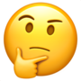

관상 MBTI
Face MBTI test
총 검사 시간은 5초 내외입니다.
사람 얼굴을 학습한 AI가 당신의 MBTI 유형을 판단합니다.

다른 사람, 남들이 보는 나의 MBTI는 무엇일까요?
클릭하여 얼굴사진을 넣어주세요.
공유하기 ↯

Face MBTI test
총 검사 시간은 5초 내외입니다.
사람 얼굴을 학습한 AI가 당신의 MBTI 유형을 판단합니다.
다른 사람, 남들이 보는 나의 MBTI는 무엇일까요?
클릭하여 얼굴사진을 넣어주세요.
공유하기 ↯
© AlphaFace. All Rights Reserved